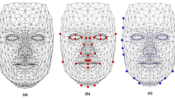

For this project, I decided to create a personal website from scratch that details my personality,
displays my coding projects, and offers users ways to contact me personally. This project was a significant learning experience for me, as
it was my first introduction to HTML and CSS. I now have the opportunity to expand my knowledge of these languages, given my recent opportunity
to take a website development class. Despite my inexperience, I was able to quickly comprehend and develop code in these languages, learning
also to use JavaScript to showcase more advanced features on the website. One notable endeavor within this project is a contact button that
automatically drafts an email to me using the user’s default email application. Another noteworthy feature is a header that disappears and
reappears corresponding to the user’s cursor location. This header allows for natural navigation between each page within the website.
Additionally, I learned many basic development tricks, such as the use of clickable icons that lead to external websites. I also took into
account and implemented style-related decisions like smooth scrolling and CSS transitions. This project introduced me to new languages and
allowed me to build exceptional problem-solving skills.
This research project was proposed by prof. Eric Rawdon of the
University of St. Thomas math department for myself and fellow student, Cameron Doffing. Prof. Rawdon conceptualized
the project with the goal of eventually creating a facial recognition computer program that combines with a machine
learning algorithm that predicts when someone is lying. Together, we created an eye-tracking algorithm that maps the
distance of prominent features in someone's face to determine whether or not they are blinking. After spending about a
month researching the best starting code from which to build from, we then optimized coding libraries like cmake and
dlib for facial recognition. Next, we tested and tweaked the program accordingly to produce the most accurate detection
for blinking. The program runs on the user's computer and can be used either live with a webcam or over a pre-recorded
video. The program overlays text over the user’s video, tracks the blink rate variable and lets the user know the total
number of blinks since the video has started; the user is also informed of each blink in real time. I learned many
valuable skills, such as downloading and configuring external coding libraries. Additionally, I expanded my ability
to read and interpret code written by another person. Lastly, I matured my capacity to edit pre-existing code for
improved accuracy, adapting to our needs. Additionally, this project taught me how to share and collaborate on code
with others, and engage in the revision process with a professor.

In my data structures coursework, as a major milestone,
I undertook a compelling project focused on developing a self-balancing binary search tree (BST)
through a meticulously crafted computer program. Drawing on advanced algorithms and data manipulation
techniques, I engineered a dynamic data structure that automatically maintains optimal balance while
accommodating rapid data insertion, retrieval, and deletion operations. By implementing fundamental
self-balancing mechanisms like AVL or Red-Black trees, I ensured that the tree's height remained
controlled, preventing performance degradation and ensuring efficient search times. This project not
only deepened my understanding of essential data structures but also equipped me with the skills to
create optimized and robust solutions for real-world computational challenges. I learned the key-skill
of understanding recursion and the order in which it unwinds, using this idea as the central basis for
coding how the tree would rebalance and rebuild itself to ensure efficiency in other departments. I have
used recursion many times before and after building this project, but this was a milestone in regards to
understanding functions that continue to call themself endlessly.